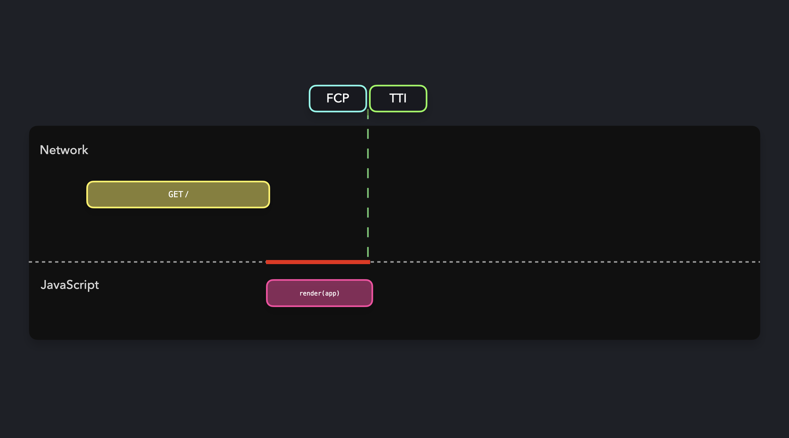

أنماط React وNext.js
العرض الساكن
يُنتج العرض الساكن (static rendering) — الذي يُسمى أيضًا توليد المواقع الساكنة (static site generation، SSG) — ملف HTML لكل مسار (route) وقت البناء. يقابل كل عنوان URL ملفًا على القرص يمكن لـ CDN تقديمه من ذاكرة المؤقتة (cache) خلال أجزاء من الثانية، بغض النظر عن موقع المستخدم أو عدد الطلبات الأخرى الجاري تنفيذها في الوقت نفسه. لا يؤدي الخادم أي عمل لكل طلب، لذا لا يتجاوز TTFB سوى زمن استجابة الشبكة.
هذه هي استراتيجية العرض ذات ملف الأداء (performance profile) الأبسط وتكلفة التشغيل الأدنى. لكنها أيضًا الاستراتيجية الأكثر تقييدًا: كل زائر يرى HTML نفسه. إذا كان مستخدمان مختلفان سيريان محتوى مختلفًا، فلن يكفي العرض الساكن وحده، لكنه ينسجم جيدًا مع عمليات الجلب في جانب العميل وISR والعرض الجزئي المسبق (partial prerendering) للتعامل مع البيانات الديناميكية من دون التخلي عن الذاكرة المؤقتة.
أين يتقدم العرض الساكن
العرض الساكن هو الخيار الصحيح عندما:
- يُحدَّث المحتوى وفق جدول نشر، لا وفق وتيرة الطلبات، مثل صفحات التسويق والتوثيق ومنشورات المدونات وسجلات التغييرات وصفحات الوصول والصفحات القانونية.
- يكون HTML نفسه صحيحًا لكل زائر، أو يمكن جعله كذلك بتأجيل الأجزاء الخاصة بكل مستخدم إلى مكوّن في جانب العميل.
- تريد تكلفة تشغيل ثابتة — فاتورة CDN بدل فاتورة دالة عديمة الخوادم.
- تحتاج إلى مرونة: يظل الموقع المعروض مسبقًا بالكامل في الخدمة حتى لو تعطل الأصل أو قاعدة البيانات.
لا يناسبه عندما:
- يتغير المحتوى مع كل طلب، مثل نتائج البحث ولوحات المعلومات وكل ما يتطلب مصادقة.
- تكبر أوقات البناء بما يكفي لإبطاء دورة النشر، وستتعلم المزيد عن ذلك أدناه.
- تحتاج إلى مراعاة موقع المستخدم الجغرافي أو ملفات تعريف الارتباط أو مجموعة اختبار A/B داخل HTML.

الصفحات الساكنة في App Router
في App Router الخاص بـ Next.js، يُعرض أي مكوّن خادمي (server component) لا يملك مصادر بيانات ديناميكية تلقائيًا بصورة ساكنة. لا حاجة إلى استدعاء getStaticProps؛ فالمكوّن نفسه يعمل وقت البناء.
// app/pricing/page.tsx
export default function Pricing() {
return (
<main>
<h1>Pricing</h1>
<p>Three tiers, no surprises.</p>
</main>
);
}
نفّذ next build، فيُصدر Next ملف HTML ساكنًا للمسار /pricing. لا يُشرك أي خادم وقت التشغيل عند وصول الطلب.
هناك أمور تجعل المسار يخرج من العرض الساكن ويدخل العرض الديناميكي:
- قراءة
cookies()أوheaders()أوdraftMode(). - استخدام
searchParamsفي مكوّن خادمي؛ وهي غير متزامنة في Next.js 15. - استدعاء
fetch()معcache: "no-store"أوnext: { revalidate: 0 }. - تصدير
dynamic = "force-dynamic"من ملف المسار.
إذا لم يحدث أي من ذلك، فالمسار ساكن.
العرض الساكن مع البيانات
تسحب معظم المواقع الحقيقية المحتوى من CMS أو قاعدة بيانات أو نظام ملفات. في App Router يكون ذلك مكوّنًا خادميًا غير متزامن عاديًا؛ إذ ينفذه Next وقت البناء ويخزّن نتيجته مؤقتًا.
// app/blog/page.tsx
import Link from "next/link";\n
export default async function BlogIndex() {
const posts = await getAllPosts();
return (
<ul>
{posts.map((post) => (
<li key={post.slug}>
<Link href={`/blog/${post.slug}`}>{post.title}</Link>
</li>
))}
</ul>
);
}
سيكتشف Next.js أن هذا المكوّن لا يملك مدخلات مرتبطة بالطلب، ومن ثم سيعرض /blog مسبقًا وقت البناء. يُنفَّذ جلب البيانات مرة واحدة على خادم البناء، ثم يُرسل HTML المعروض إلى CDN.
المسارات الديناميكية باستخدام generateStaticParams
البديل في App Router لـ getStaticPaths هو generateStaticParams. صدّره من ملف مسار ذي مقطع ديناميكي، فيعرض Next ملف HTML واحدًا لكل مجموعة معاملات يُعيدها.
// app/blog/[slug]/page.tsx
import { notFound } from "next/navigation";\n
export async function generateStaticParams() {
const posts = await getAllPosts();
return posts.map((post) => ({ slug: post.slug }));
}\n
// Reject params not returned above. Default in Next 15 is true.
export const dynamicParams = false;\n
export default async function Post({ params }) {
const { slug } = await params; // params is async in Next 15
const post = await getPost(slug);
if (!post) notFound();\n
return (
<article>
<h1>{post.title}</h1>
<div dangerouslySetInnerHTML={{ __html: post.html }} />
</article>
);
}
اضبط dynamicParams = true أو احذفه لعرض المعرّفات غير المعروفة عند الطلب ثم خزّن النتيجة مؤقتًا. هذا هو مجال ISR، وسنغطيه في النمط التالي.
العرض الساكن مع جلب في جانب العميل
عندما يكون معظم الصفحة ساكنًا لكن جزءًا واحدًا يعتمد فعليًا على كل طلب — مثل عدّاد «المشاهدون الآن» أو شريط توصيات مخصص أو ترحيب لمن سجّل الدخول — يمكنك إبقاء الصفحة ساكنة وطلب من مكوّن في جانب العميل (client component) أن يملأ الجزء الديناميكي بعد الترطيب (hydration).
// app/products/[id]/page.tsx
import RecommendationsClient from "./RecommendationsClient";\n
export async function generateStaticParams() {
const products = await getAllProducts();
return products.map((p) => ({ id: p.id }));
}\n
export default async function Product({ params }) {
const { id } = await params;
const product = await getProduct(id);\n
return (
<>
<ProductDetails product={product} />
{/* hydrated separately, fetches at runtime */}
<RecommendationsClient productId={product.id} />
</>
);
}
لا يزال HTML يصل معروضًا مسبقًا. ترطب أداة التوصيات وتنفّذ عملية جلب خاصة بها، عادةً عبر TanStack Query أو SWR من أجل التخزين المؤقت وإعادة التحقق (revalidation). يمنحك هذا النمط TTFB الخاص بالعرض الساكن للمحتوى الرئيسي وحداثة البيانات لكل مستخدم في المكان الذي يهم.
العرض الجزئي المسبق: هيكل ساكن + فتحات ديناميكية مبثوثة
العرض الجزئي المسبق (Partial Prerendering، PPR) هو ميزة تجريبية في Next.js تمزج المحتوىين الساكن والديناميكي في عملية عرض واحدة. تُرسَل الأجزاء الساكنة من الصفحة هيكلًا معروضًا مسبقًا. أما الأجزاء الديناميكية — المغلّفة بـ `` — فتُبث من بيئة تشغيل الخادم ضمن الاستجابة نفسها.
// app/page.tsx
import { Suspense } from "react";
import { cookies } from "next/headers";\n
export const experimental_ppr = true;\n
async function GreetingForUser() {
const cookieStore = await cookies(); // dynamic
const session = cookieStore.get("session");
const name = session ? await lookupName(session.value) : "there";
return <p>Hello, {name}</p>;
}\n
export default function Home() {
return (
<main>
<h1>Welcome to the store</h1> {/* static */}
<Hero /> {/* static */}\n
<Suspense fallback={<p>Hello...</p>}>
<GreetingForUser /> {/* dynamic, streamed */}
</Suspense>\n
<FeaturedProducts /> {/* static, data fetched at build */}
</main>
);
}
يحصل المستخدم على الهيكل الساكن بسرعة CDN. تُبث الفتحة الديناميكية كإضافة مجزأة إلى الاستجابة نفسها، بينما يسدّ البديل الاحتياطي (fallback) الفجوة المؤقتة. فتحصل على TTFB الخاص بالعرض الساكن في الأجزاء الساكنة، وحداثة SSR في بقية الأجزاء، من دون تقسيم الصفحة إلى مسارات منفصلة.
فعّل PPR في next.config.js باستخدام experimental.ppr = "incremental" لتفعيله على مستوى كل مسار.
ملف الأداء
| المقياس | SSG خالص | SSG مع جلب في العميل | SSR | PPR |
|---|---|---|---|---|
| TTFB | ممتاز (ذاكرة CDN المؤقتة) | ممتاز | بطيء (لكل طلب) | ممتاز (يُبث الهيكل الساكن أولًا) |
| LCP | ممتاز | جيد | متغير | ممتاز |
| التخصيص داخل HTML | لا | بعد الترطيب | نعم | نعم (داخل الفتحات الديناميكية) |
| تكلفة الخادم لكل طلب | $0 | منخفضة | لكل عملية عرض | لكل مقطع ديناميكي |
| إبطال الذاكرة المؤقتة | إعادة البناء وإعادة النشر | لا ينطبق على الجزء الديناميكي | لا ينطبق | إعادة التحقق لكل مقطع |
اعتبارات وقت البناء
للعرض الساكن تكلفة تشغيلية واحدة تتناسب مع حجم المحتوى: زمن البناء. إذا كان موقع التجارة الإلكترونية لديك يملك 200,000 منتج واستغرق عرض كل صفحة تفصيلية 50 مللي ثانية، فإن البناء الكامل يستغرق نحو 3 ساعات من العرض أحادي الخيط. وتساعدك الاستراتيجيات التالية:
- اعرض الصفحات N الأولى مسبقًا فقط باستخدام
generateStaticParams، واعرض الباقي ديناميكيًا عند أول طلب مع التخزين المؤقت عبر ISR. هذا ما تفعله معظم المواقع الكبيرة. - وازِن البناء بالتوازي عبر عدة عمّال؛ فمعظم أطر العمل الحديثة تفعل ذلك تلقائيًا، لكنه يتوسع مع عدد أنوية المعالج.
- خزّن عمليات الجلب مؤقتًا بين عمليات البناء باستخدام ذاكرة المؤقتة التدريجية (incremental cache)؛ إذ يحفظ Next.js نتائج الجلب السابقة ويعيد استخدامها عند عدم تغيرها.
- استخدم إعادة التحقق عند الطلب (on-demand revalidation) بدلًا من إعادة بناء الموقع بأكمله عند تغير صفحة واحدة.
متى لا يكفي العرض الساكن
القيد الأساسي للعرض الساكن — HTML نفسه لكل زائر، لا يتغير إلا وقت البناء — هو ما يجعله رخيصًا وسريعًا. وعندما يسبب هذا القيد مشكلة، يخفّف النمط التالي، التوليد الساكن التزايدي (Incremental Static Regeneration، ISR)، جانب «لا يُحدَّث إلا وقت البناء». وبعد ذلك، يعالج البث مع SSR ومكوّنات React الخادمية جانب «HTML نفسه للجميع».